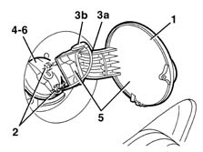
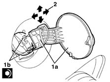

7025C10 fuel filler flap - r+r
- Path
- Procedures > 70 FITTINGS > 7025 COMPARTMENT LIDS > 7025C various flaps (exterior) > 7025C10 fuel filler flap - r+r
- Kind
- repair procedure (removal / refitting; the operation number is the code)
- Applies to
- all engines; all production periods
- Interactive page
- https://sloeber94.github.io/elrnDB-lYpsln/en/#/2429550
Applies to: all engines; all production periods
 Removing
Removing
 Refitting
Refitting7055B45 right hand rear supplementary wheel arch - r+r
1. Open the fuel flap.
2. Undo the nuts fixing the flap from the inside of the wing.
3. Release the rod (3a) from the housing (3b).
4. Undo the fuel cap.
5. Remove the flap and support.
6. Retighten the fuel cap.

Applies to: all engines; all production periods
Refitting
RemovingCheck that the flap is undamaged.
Temporarily remove the fuel filler cap.
Fit the flap and refit the fuel filler cap.
1. Tighten the nuts and adjust the flap (1a) position to align it with the bodywork. The arrows indicate possible movements. Tighten the nuts (1b).
 | Fastening | Component | Ø | Value (daNm) |
|---|---|---|---|---|
- | Nut | FUEL FLAP | M6 | 0.8 |
Attach the rod

Applies to: all engines; all production periods
7055B45 right hand rear supplementary wheel arch - r+r
Check that the door opens and shuts properly.